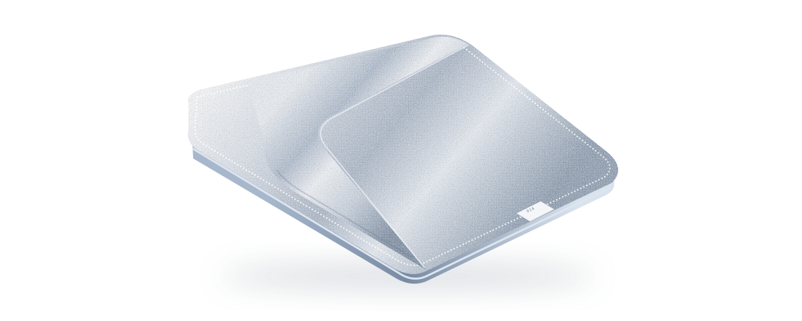

БАЗОВЫЙ КУРС01
Отжим. На уровне Pro.
Превратите мокрую неопределённость в уверенный результат. Хват, поворот и контроль последней капли.
*Почти без воды.

Давыдов Сергей Андреевич
916 кафедра НИУ МАИ · Школа чистой доскиЗнакомая тряпка. Совершенно новый уровень притязаний.
Ваш следующий большой прорыв.
Стирает границы. И интегралы.
Открыть возможности ›Созданы для большой перемены.
От первой капли до последнего мелового следа.
Два курса. Одна большая перемена.
Превратите мокрую неопределённость в уверенный результат. Хват, поворот и контроль последней капли.
Освойте проход сверху вниз и победите меловой туман. Сотрите интеграл так, чтобы он больше не вернулся.
Метод Давыдова*
У нашей вымышленной школы всё по науке. Сначала теория. Потом практика. Потом кто-нибудь снова пишет на доске.
*Шуточная методика. Серьёзное выражение лица — по желанию.
Изучаем хват, поворот и траекторию капли. Вода должна оказаться в ведре, а не в конспекте.
ТЕОРИЯ + ЗНАКОМСТВО С ТРЯПКОЙДвигаемся от верхнего левого угла к академической чистоте. Интегралы исчезают вместе с сомнениями.
ПРАКТИКА НА УЧЕБНОЙ ДОСКЕФинальный проход. Комиссия: вы, тряпка и отражение лампы. Главное — не оставить вопросов. И разводов.
ШУТОЧНЫЙ СЕРТИФИКАТ В ФИНАЛЕБольшие возможности. Воображаемые цены.
Цены в воображаемых каплях.
Реальные деньги оставьте на обед.
ДЛЯ ПЕРВОГО ЗНАКОМСТВА
Большой путь начинается
с маленького ведра.
САМЫЙ ЧИСТЫЙ ПОДХОД
Для тех, кто готов
дойти до чистого угла.
ДЛЯ БУДУЩЕЙ ЛЕГЕНДЫ
Всё включено.
Даже последняя капля.
*Исключительно в рамках этой шутки. Платежей, настоящих занятий и образовательных документов здесь нет.
Есть вопросы?
В смысле — вопросы.
Достаточно отличать тряпку от конспекта. Хотя после сессии это бывает непросто.
Конечно. Портфолио тряпки и рекомендательное письмо от ведра не требуются.
Да, шуточный. Выберите любой курс или тариф, впишите имя и скачайте сертификат. Над ведром он смотрится особенно убедительно.
Нет. Это неофициальная пародия о Давыдове Сергее Андреевиче и 916 кафедре НИУ МАИ. Все курсы, цены и квалификации придуманы для шутки. Сайт не представляет Сергея Андреевича, кафедру или университет.
Силой воображения. Мы не принимаем платежи и никуда не отправляем введённое имя. Выдача шуточного сертификата происходит прямо в вашем браузере.